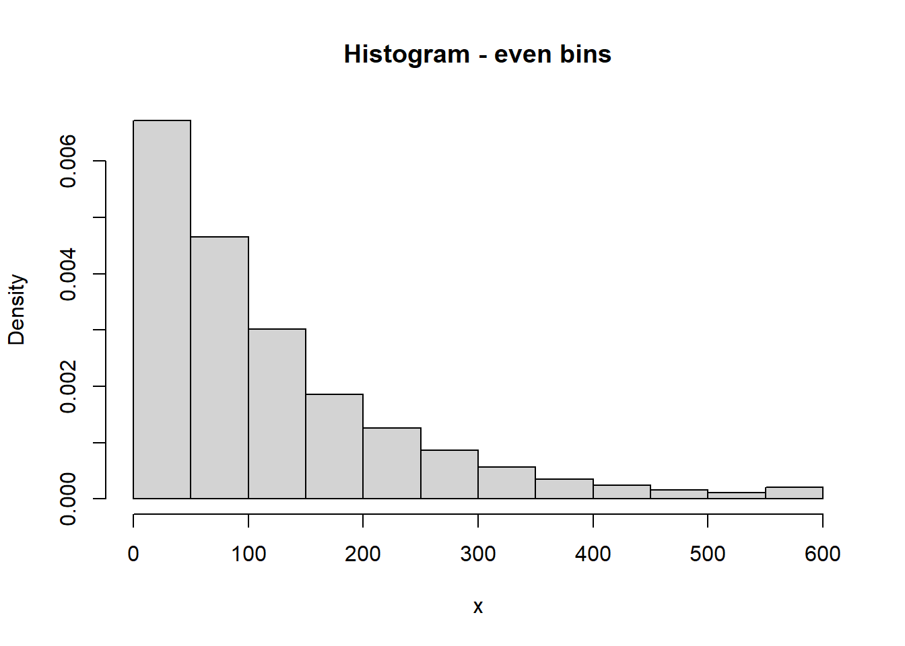
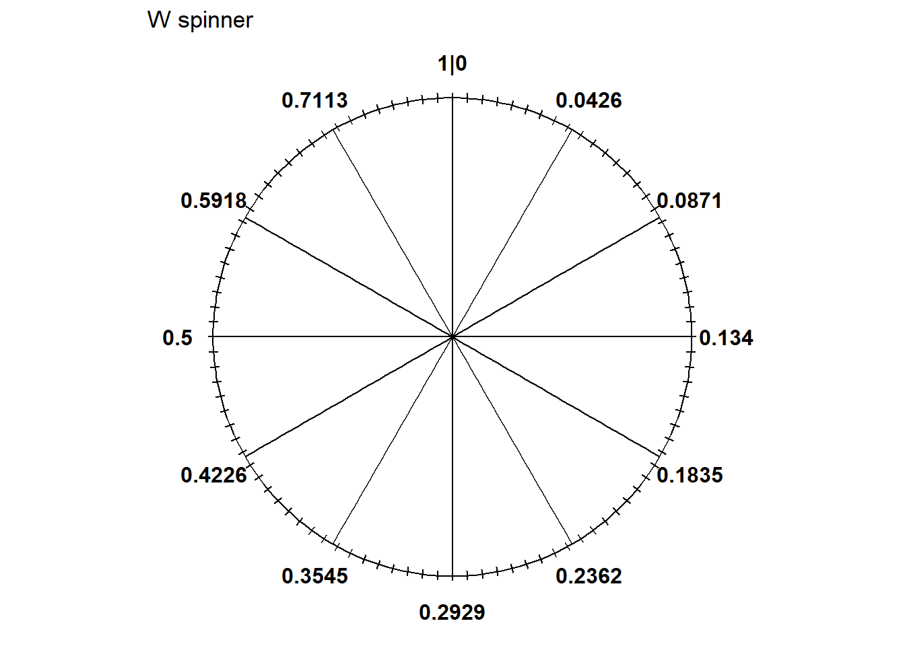
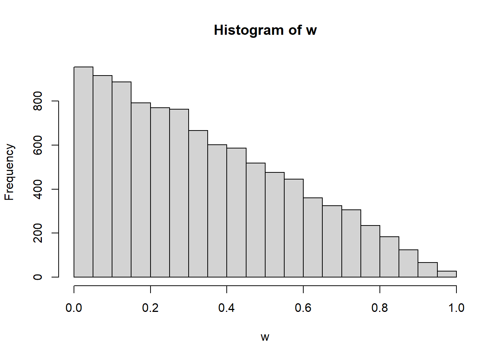
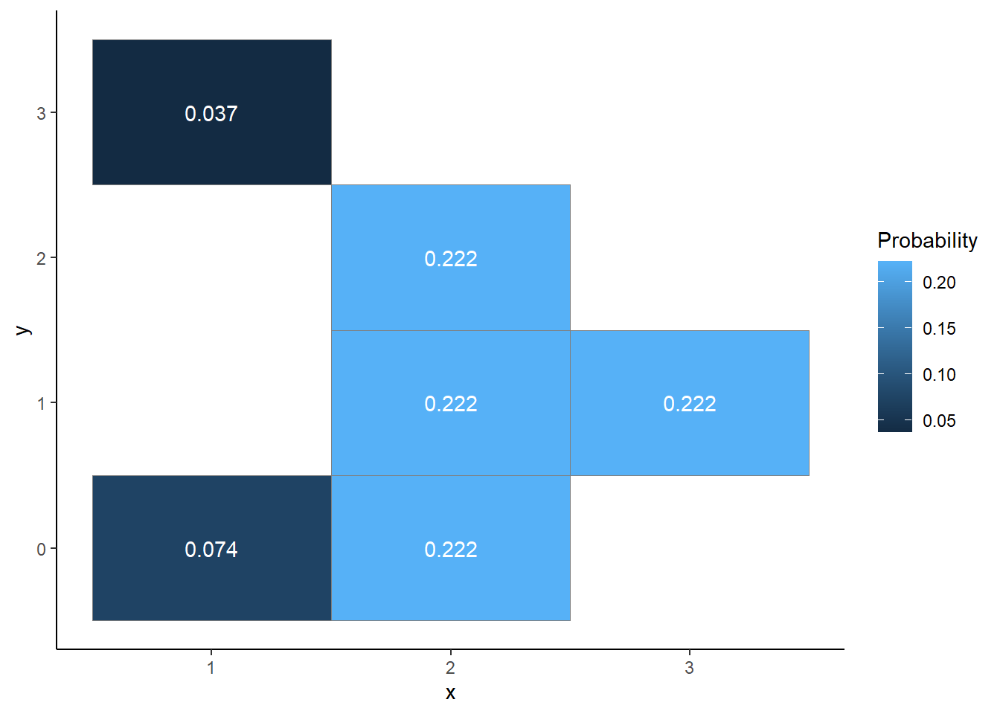
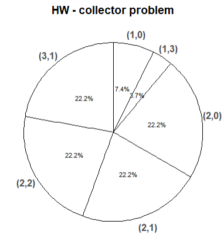
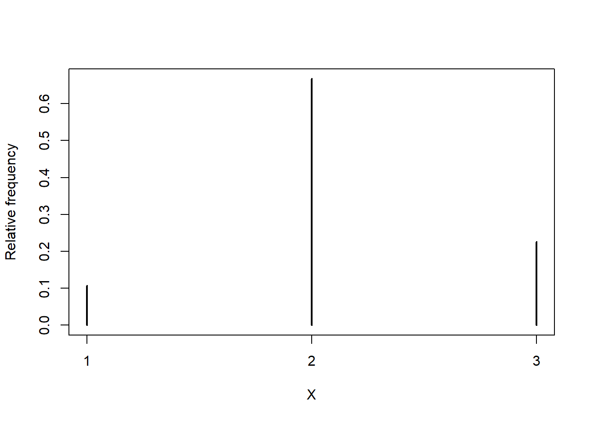
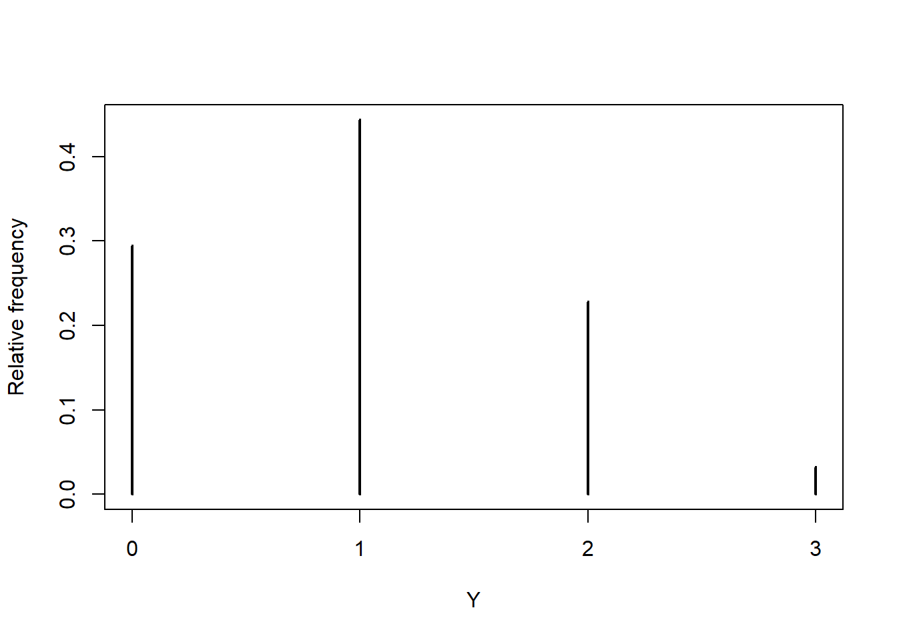

| Percentile | Value (minutes) |
|---|---|
| 10th | 12.6 |
| 20th | 26.8 |
| 30th | 42.8 |
| 40th | 61.3 |
| 50th | 83.2 |
| 60th | 110.0 |
| 70th | 144.5 |
| 80th | 193.1 |
| 90th | 276.3 |
Homework 4 Solutions
Problem 1
In a certain region, times (minutes) between occurrences of earthquakes (of any magnitude) have a distribution with percentiles displayed in the table below.
- Construct a spinner corresponding to this distribution.
- What percent of times are between 26.8 and 110.0 minutes?
- Let \(F\) be the cdf. Evaluate and interpret \(F(42.8)\).
- Let \(Q\) be the quantile function. Evaluate and interpret \(Q(0.9)\).
- Sketch (by hand) a histogram of this distribution.
Solution
- See below. The 50th percentile goes at “6 o’clock” (50% of the way around), etc.
- 60% are below 110.0 and 20% are below 26.8, so 40% are between 26.8 and 110.0 minutes.
- \(F(42.8)=\text{P}(X \le 42.8) = 0.3\), since 42.8 minutes is the 30th percentile.
- \(Q(0.9) = 276.3\), since 276.3 minutes is the 90th percentile.
- We always end with a histogram with even bins, but sometimes it helps to start sketching a histogram with unever bins. We know that 10% of the values are between 0 and 12.6, 10% are between 12.6 and 26.8, 10% are between 26.8 and 42.8, etc. So if we split the bins of the histogram based on these percentiles, each bin would correspond to a relative frequency of 10%. HOWEVER, AREA in a histogram represents relative frequency. So each of the bins would have the same area, but they are unequally spaced, so they would not have the same height. For example, the first bin has area of 10% over a base of (0, 12.6), while the 80-90 percentile bin has area 10% spread over the interval (193.1, 276.3), so the bar for (193.1, 276.3) will have a smaller height than the bar for (0, 12.6). Sketching a histogram with these unevenly spaced bins first gives an idea of the shape; then you can sketch a histogram with a similar shape but equally spaced bins. We can see that density is highest near 0 and decreases as \(x\) increases; notice the stretching and shrinking on the spinner. (The highest percentile is the 90th, so we don’t know what the upper bound is that almost all values fall below.)



Problem 2
(Continued.) In the Regina/Cady problem, let \(W=|R-Y|\) be the amount of time the first person to arrive has to wait for the second person. Recall that \(W\) is a continuous random variable with pdf
\[ f_W(w) = 2(1-w), \quad 0 < w < 1. \]
- Let \(F\) be the cdf. Evaluate and interpret \(F(0.25)\).
- Find an expression for the cdf of \(W\). Set up an integral, but sketch a picture and use geometry to compute.
- Find and interpret the 25th percentile of \(W\). (You can do the next part first if you want, but it might help to start with a specific number like in this part.)
- Find the quantile function of \(W\).
- Sketch a spinner corresponding to the distribution of \(W\). Label the 25th, 50th, and 75th percentiles.
- Coding required. Use your simulation results from before to approximate the 25th, 50th, and 75th percentiles.
Solutions
- \(F(0.25)=\text{P}(W \le 0.25)\), which we computed on a previous HW to be \(1 - (1-0.25)^2 = 0.4375\). On about 44% of days Regina arrives within the first 15 minutes (0.25 hours).
- Similar to computing \(F_W(0.25) = \text{P}(W\le 0.25)\) from an earlier problem, but replace 0.25 with a generic \(w\) (and remember to change the dummy variable of integration). For \(0<w<1\), \[ F_W(w) = \text{P}(W < w) = \int_0^{w} 2(1-u)du = -(1-u)^2 \Big\vert_{w =0}^{u=w} = 1 - (1-w)^2 \] Technically the cdf is defined for any value of \(w\), so it’s really \[ F_W(w) = \begin{cases} 0, & w \le 0\\ 1 - (1-w)^2, & 0 < w < 1\\ 1, & w\ge 1 \end{cases} \]
- The 25th percentile satisfies \[ 0.25 = \text{P}(W \le w) = F_W(w) = 1 - (1 - w)^2 \] Solve to get \(w=1-\sqrt{1-0.25} = 0.134\) The waiting time is at most 0.134 hours (about 8 minutes) on 25% of days.
- To find the \(p\) percentile \(q\), use the same process as in in the previous part. \[ p = \text{P}(W\le w) = F_W(w) = 1 - (1 - w)^2 \] Solve to get \(w=1-\sqrt{1-p}\). So the quantile function is \(Q_W(p) = 1 - \sqrt{1-p}, 0\le p\le 1\).
- See spinner below. We can use the quantile function to label the spinner.
- The 25th percentile of \(Q_W(0.25) = 1 - \sqrt{1-0.25} = 0.134\) hours (8 minutes) would go at the 3 o’clock point.
- The 50th percentile of \(Q_W(0.5) = 1 - \sqrt{1-0.5} = 0.293\) hours (17.6 minutes) would go at the 6 o’clock point.
- The 75th percentile of \(Q_W(0.75) = 1 - \sqrt{1-0.75} = 0.5\) hours (30 minutes) would go at the 9 o’clock point.
- Notice that the values around the spinner are unequally spaced. The density of \(W\) is higher near 0 so intervals near 0 are stretched out; the density of \(W\) is lower near 1 so intervals near 1 are shrunk.
- See simulation results below. Use the
quantilefunction.

N_rep = 10000
x = runif(N_rep, 0, 1)
y = runif(N_rep, 0, 1)
w = abs(x - y)
hist(w)
quantile(w, 0.25) 25%
0.1365488 quantile(w, c(0.25, 0.5, 0.75)) 25% 50% 75%
0.1365488 0.2950640 0.5048121 Problem 3
Solve Example 11.3 from the Normal distribution handout (the problem on daily high temperatures in SLO.)
Solution
Problem 4
Solve Example 11.4 from the Normal distribution handout (the problem on “effect size”.)
Solution
Problem 5
The latest series of collectible Lego Minifigures contains 3 different Minifigure prizes (labeled 1, 2, 3). Each package contains a single unknown prize. Suppose we only buy 3 packages and we consider as our sample space outcome the results of just these 3 packages (prize in package 1, prize in package 2, prize in package 3). For example, 323 (or (3, 2, 3)) represents prize 3 in the first package, prize 2 in the second package, prize 3 in the third package. Let \(X\) be the number of distinct prizes obtained in these 3 packages. Let \(Y\) be the number of these 3 packages that contain prize 1. Suppose that each package is equally likely to contain any of the 3 prizes, regardless of the contents of other packages. There are 27 possible, equally likely outcomes
New names:
• `` -> `...4`
• `` -> `...5`| box1 | box2 | box3 | X | Y |
|---|---|---|---|---|
| 1 | 1 | 1 | 1 | 3 |
| 2 | 1 | 1 | 2 | 2 |
| 3 | 1 | 1 | 2 | 2 |
| 1 | 2 | 1 | 2 | 2 |
| 2 | 2 | 1 | 2 | 1 |
| 3 | 2 | 1 | 3 | 1 |
| 1 | 3 | 1 | 2 | 2 |
| 2 | 3 | 1 | 3 | 1 |
| 3 | 3 | 1 | 2 | 1 |
| 1 | 1 | 2 | 2 | 2 |
| 2 | 1 | 2 | 2 | 1 |
| 3 | 1 | 2 | 3 | 1 |
| 1 | 2 | 2 | 2 | 1 |
| 2 | 2 | 2 | 1 | 0 |
| 3 | 2 | 2 | 2 | 0 |
| 1 | 3 | 2 | 3 | 1 |
| 2 | 3 | 2 | 2 | 0 |
| 3 | 3 | 2 | 2 | 0 |
| 1 | 1 | 3 | 2 | 2 |
| 2 | 1 | 3 | 3 | 1 |
| 3 | 1 | 3 | 2 | 1 |
| 1 | 2 | 3 | 3 | 1 |
| 2 | 2 | 3 | 2 | 0 |
| 3 | 2 | 3 | 2 | 0 |
| 1 | 3 | 3 | 2 | 1 |
| 2 | 3 | 3 | 2 | 0 |
| 3 | 3 | 3 | 1 | 0 |
- Evaluate \(X\) and \(Y\) for each of the outcomes.
- Construct a two-way table representing the joint distribution of \(X\) and \(Y\).
- Sketch a plot representing the joint distribution of \(X\) and \(Y\).
- Construct a spinner corresponding to the joint distribution of \(X\) and \(Y\).
- Describe two ways to simulate an \((X, Y)\) pair.
- Identify the marginal distribution of \(X\), and construct a corresponding spinner.
- Identify the marginal distribution of \(Y\), and construct a corresponding spinner.
- Describe in detail in words how you could conduct a simulation and use the results to approximate. (This part is asking you to describe the process in words; not to write code.)
- \(\text{P}(X = 3)\)
- \(\text{P}(X = 2, Y = 1)\) iii.\(\text{E}(X)\) iii.\(\text{E}(Y)\)
- \(\text{E}(XY)\)
- \(\text{SD}(X)\) iii.\(\text{SD}(Y)\)
- \(\text{Cov}(X, Y)\)
- \(\text{Corr}(X, Y)\)
- Coding required. Code and run the simulation from the previous part and use the simulation results to approximate each of
- \(\text{P}(X = 3)\)
- \(\text{P}(X = 2, Y = 1)\) iii.\(\text{E}(X)\) iii.\(\text{E}(Y)\)
- \(\text{E}(XY)\)
- \(\text{SD}(X)\) iii.\(\text{SD}(Y)\)
- \(\text{Cov}(X, Y)\)
- \(\text{Corr}(X, Y)\)
- Compute
- \(\text{P}(X = 3)\)
- \(\text{P}(X = 2, Y = 1)\) iii.\(\text{E}(X)\) iii.\(\text{E}(Y)\)
- \(\text{E}(XY)\)
- \(\text{SD}(X)\) iii.\(\text{SD}(Y)\)
- \(\text{Cov}(X, Y)\)
- \(\text{Corr}(X, Y)\)
Solution
These don’t quite match the assignment, but the ideas are similar.
| box1 | box2 | box3 | X | Y |
|---|---|---|---|---|
| 1 | 1 | 1 | 1 | 3 |
| 2 | 1 | 1 | 2 | 2 |
| 3 | 1 | 1 | 2 | 2 |
| 1 | 2 | 1 | 2 | 2 |
| 2 | 2 | 1 | 2 | 1 |
| 3 | 2 | 1 | 3 | 1 |
| 1 | 3 | 1 | 2 | 2 |
| 2 | 3 | 1 | 3 | 1 |
| 3 | 3 | 1 | 2 | 1 |
| 1 | 1 | 2 | 2 | 2 |
| 2 | 1 | 2 | 2 | 1 |
| 3 | 1 | 2 | 3 | 1 |
| 1 | 2 | 2 | 2 | 1 |
| 2 | 2 | 2 | 1 | 0 |
| 3 | 2 | 2 | 2 | 0 |
| 1 | 3 | 2 | 3 | 1 |
| 2 | 3 | 2 | 2 | 0 |
| 3 | 3 | 2 | 2 | 0 |
| 1 | 1 | 3 | 2 | 2 |
| 2 | 1 | 3 | 3 | 1 |
| 3 | 1 | 3 | 2 | 1 |
| 1 | 2 | 3 | 3 | 1 |
| 2 | 2 | 3 | 2 | 0 |
| 3 | 2 | 3 | 2 | 0 |
| 1 | 3 | 3 | 2 | 1 |
| 2 | 3 | 3 | 2 | 0 |
| 3 | 3 | 3 | 1 | 0 |
One dimension will have possible values of \(x\), the other possible values of \(y\). The interior cells should contain the probability of each \((x, y)\) pair.
\(y\) \(x\) 0 1 2 3 Total 1 2/27 0 0 1/27 3/27 2 6/27 6/27 6/27 0 18/27 3 0 6/27 0 0 6/27 Total 8/27 12/27 6/27 1/27 1 Make a tile plot with color or shading representing probability; see below.
The spinner is below; it returns the 6 possible \((x, y)\) pairs with the proper probabilities.
Method 1: Simulate from the probability space: Label 3 cards: 1, 2, 3. Shuffle the cards and deal one, then replace the card and repeat, dealing a total of 3 cards, e.g., 212. Measure \(X\) and \(Y\) for the outcome.
Method 2: Simulate from the distribution. Spin the spinner from the previous part once to generate an \((X, Y)\) pair.
The possible values of \(X\) are in the leftmost column and the probabilities are in the Total column. See previous HW solutions for plot and spinner.
The possible values of \(Y\) are in the top row (0, 1, 2, 3) and the probabilities are in the Total row. See previous HW solutions for plot and spinner.
Method 1: Simulate from the probspace: Draw three “boxes” and observe the prize sequence, and measure \(X\).
Method 2: Simulate from marginal dist: Spin the \(X\) spinner once and observe the value.
Method 3: Simulate from joint dist: Spin the joint distribution spinner once to obtain an \((X, Y)\) pair, and ignore \(Y\). (This is the one we didn’t see on a previous HW.)
Describe in detail how you could conduct a simulation to and use the results to approximate
- \(\text{P}(X = 3)\). Simulate many values of \(X\), count the number of simulated values equal to 3, and divide by the number of simulated values (i.e., find the simulated relative frequency of 3)
- \(\text{P}(X = 2, Y = 1)\). Simulate many \((X, Y)\) pairs, count the number of simulated pairs in which \(X = 2\) and \(Y = 1\), and divide by the number of simulated values (i.e., find the simulated relative frequency of the event \(\{X = 2, Y = 1\}\))
- The long run average value of \(X\). Simulate many values of \(X\) and compute their average (i.e., sum the simulated values of \(X\) and divide by the number of simulated values.)
- The long run average value of \(XY\). Simulate many \((X, Y)\) pairs, find the product \(XY\) for each pair, and compute the average value of the products (i.e., sum the simulated values of \(XY\) and divide by the number of simulated pairs.)


There are many ways of doing the simulation. I’ll use a for loop
# Number of repetitions
N_rep = 10000
# Initialize place holders for X and Y
# Each of X and Y will eventually contain 10000 values
# but initially they are empty
X = vector(length = N_rep)
Y = vector(length = N_rep)
for (i in 1:N_rep) {
# within the loop a single repetition is performed
# simulate the 3 prizes
outcome = sample(1:3, size = 3, replace = TRUE)
# find the number of distinct prizes
x = length(unique(outcome))
# count the number of prize 1s
y = sum(outcome == 1)
# record the values in X and Y
X[i] = x
Y[i] = y
}
# After the loop runs each of X and Y will have 10000 values
# X counts
table(X)X
1 2 3
1068 6676 2256 # Rough plot of approximate distribution of X
plot(table(X) / N_rep,
xlab = "X",
ylab = "Relative frequency")
# Y counts
table(Y)Y
0 1 2 3
2950 4437 2285 328 # Rough plot of approximate distribution of Y
plot(table(Y) / N_rep,
xlab = "Y",
ylab = "Relative frequency")
# (X, Y) counts
table(X, Y) Y
X 0 1 2 3
1 740 0 0 328
2 2210 2181 2285 0
3 0 2256 0 0# Approximate E(X)
mean(X)[1] 2.1188# Approximate E(Y)
mean(Y)[1] 0.9991# Approximate SD(X)
sd(X)[1] 0.5641971# Approximate SD(Y)
sd(Y)[1] 0.8091753# Approximate E(XY)
mean(X * Y)[1] 2.1254# Approximate Cov(X, Y)
cov(X, Y)[1] 0.008507771# Approximate Corr(X, Y)
cor(X, Y)[1] 0.01863555# Approximate P(X = 3)
sum(X == 3) / N_rep[1] 0.2256# Approximate P(X = 2, Y = 1)
sum((X == 2) * (Y == 1)) / N_rep[1] 0.2181